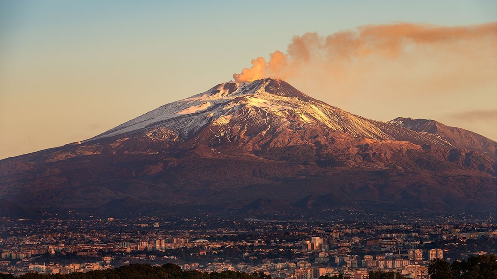

IL VULCANO ETNA
Il gigante di fuoco
Patrimonio dell'Umanità UNESCO, l'Etna offre paesaggi lunari unici al mondo, crateri fumanti e boschi secolari. È una meta imperdibile per gli amanti dell'escursionismo e, in inverno, permette persino di sciare godendo di un panorama spettacolare sul mare.